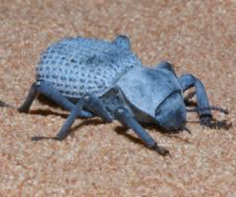

3. Blue death feigning beetles

These insects get the name “blue death feigning beetle” from their color and their ability to play dead. Though naturally black, these beetles secrete a bluish wax that prevents them from drying out in the Sonoran desert, the place they call home. Having one of the hardest exoskeletons of any insect, blue death feigning beetles feign death to discourage predators from eating them.